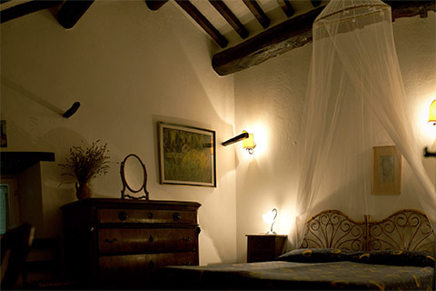
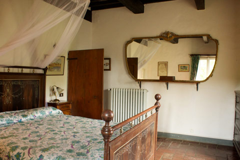
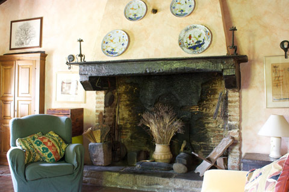
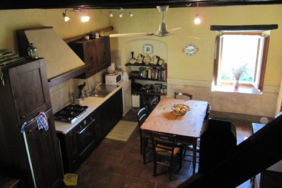

- 
- 
- 
- 

Accomodation
Enchanting Tuscan Farmhouse with Private Pool 5km from the beutiful Medieval Town of Cortona
Sleeps 7+1 (4 Bedrooms)
The newly renovated interior includes a spacious living room with stone hearth, a brand new kitchen and d ning area, a first floor master bedroom suite, two double bedrooms and one single bedroomupstairs, and two full bathrooms
The house has 3 floors 2 of which are available for rent with their own private entrance. All the rooms still have their original chestnut beams and terracotta tiled floors. The first floor has a large spacious living room with a sitting room. This sitting room is filled with a rich collection of books that we have lovingly collected over the years that you are welcome to browse through at leisure.
The kitchen and dining area has been recently frescoed using natural pigments and lime wash. The master bedroom has a double bed and en suite bathroom with a bath. On the second floor there are 3 bedrooms; a bedroom with a double bed, a bedroom with two single beds and a single room. There is also bathroom with a shower.
Arrival/Departure day is Saturday. Check-in between 16:00-21:00. Check-out before 10.00am (all unless otherwise agreed).
Bedrooms:
Four bedrooms all with original exposed chestnut beams and ancient terracotta tiled floors. One double en-suite, 2 doubles and a single with a bathroom with shower.
Bathrooms:
One double en-suite and a bathroom with shower.
Kitchen
Fully fitted with extensive cooking utensils, plus microwave, dishwasher.
Utility room:
Washing machine and sink.
Living Rooms:
Spacious and comfortable sitting room with original open working fireplace, TV DVD player and DVDs also a varied collection of books that we have lovingly collected over the years that you are welcome to browse through at leisure.
Cleaning/towels/linen/maid service:
Linen and towels are provided and a cleaner comes once a week, but can come more regularly if requested with an added cost.
Our prices:
We usually rent from saturday to saturday, but we want you to take advantage of reasonable air tickets. You can choose your convenient arrival day! (minimum stay 10 days)
10% discount for more than 2 weeks.
| Prices per week and up to 7+1 guests (2011) | 01/04 to 30/05 | 01/06 to 30/06 | 01/07 to 31/08 | 01/09 to 31/10 |
|---|---|---|---|---|
| Four bedroom house | € 900 | € 1300 | € 1450 | € 900 |
| Double room | € 90 | € 100 | € 100 | € 90 |
Cancellation policy
25% deposit to be paid at the time of booking. Balance to be settled no later than 60 days prior to arrival (unless otherwise agreed). Refundable breakage deposit on arrival 200 euros.
Charges due to cancellation: 90% refunded with 90 days notice or more prior to arrival, 50% refunded with between 90 and 60 days notice prior to arrival, no refund 60 days or less notice prior to arrival.
Notes on accomodation:
Children are welcome and cots are available on request.
- Cot
- Barbeque
- Private pool (for sole use of guests)
- Pets accepted
The property is ideal for those with mobility problems and has been modified especially for wheelchair accessibility.
About the owner
Louise Maciejewski is a renaissance woman with a passion for Italian history, art and culture. Her in-depth knowledge of the Etruscans and of Rome’s early history provides visitors with a more authentic experience as she leads them on excursions throughout Tuscany and Umbria.
She brings to her lectures an understanding of the peoples who have inhabited this part of the world for thousands of years; her knowledge of art restoration and conservation inspire her work as a lecturer. As the owner of an organic olive farm, she combines her respect of the land with the skill of an artisan to produce award-winning olive oil.